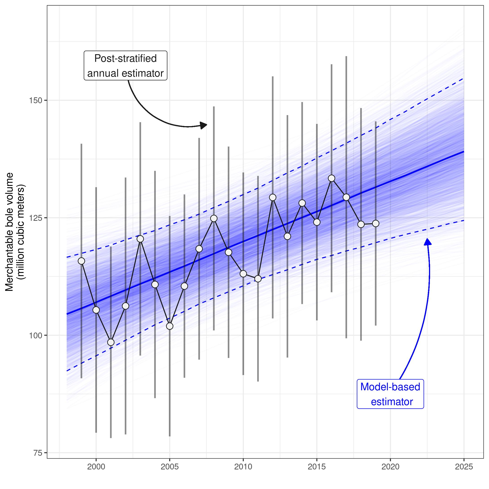
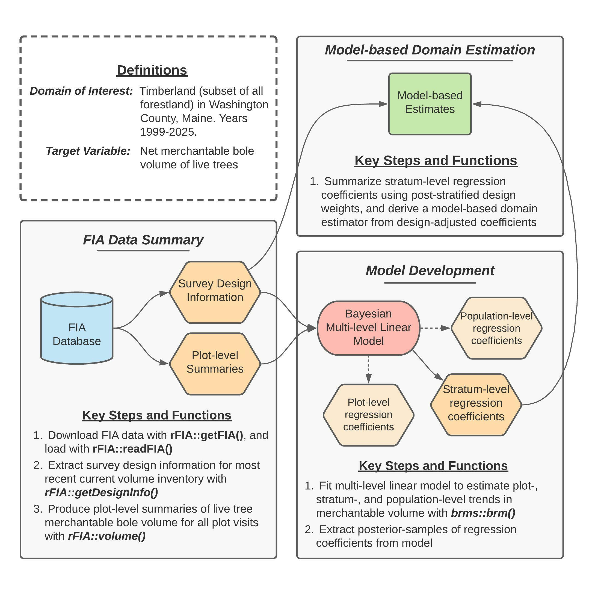

Estimating temporal trends in merchantable wood volume
Hunter Stanke
2022
Source:vignettes/fgcCS2.Rmd
fgcCS2.Rmd
This page provides a detailed tutorial of the code used to implement the second case study presented in Stanke, Finley, Domke (2021), “Simplifying small area estimation with rFIA: a demonstration of tools and techniques”. Here, we develop a temporally-explicit unit-level estimator of trends in merchantable wood volume in Washington County, Maine, using a Bayesian multi-level linear model and data collected by the USFS Forest Inventory and Analysis (FIA) Program. Note that this tutorial only shows the code and does not show the results of the code.

Figure 2 (reprinted above for convenience) provides a concept map illustrating key steps, functions, and workflows used to estimate multi-decadal trends in merchantable wood volume in Washington County. Here, blue cylinders represent data inputs, orange hexagons represent intermediate data products, red ovals represent models, and green rectangles represent domain estimates.
In words, this process consists of four primary stages:
- Extract survey design information associated with the most recent “current volume” inventory in Maine.
- Produce plot-level summaries of merchantable wood volume for all FIA plot visits within our domain of interest (i.e., timberland in Washington county, years 1999-2025).
- Fit a Bayesian multi-level linear model to estimate plot- and stratum-level mean merchantable wood volume conditional on time, accounting for repeated observation of plots.
- Summarize regression coefficients estimated by the model using post-stratified design weights, yielding a robust model-based estimator of temporal trends in total merchantable wood volume for our domains of interest.
Finally, we evaluate the performance of our model by comparing model-based population estimates to annual, post-stratified estimates (design-based) for the same population over the period 1999-2019.
Getting Started
Downloading code and data from GitHub
Data and code required to replicate our workflows are available on GitHub. If you
are familiar with Git, simply clone this repository on your local
machine to get started. If you are not familiar, click on the
Code dropdown in the upper-right hand corner of the landing
page here
(just left of the About section), and you can download the
full repository as a zip file.
Important: we house code and data associated with
both case studies presented in this manuscript in the GitHub repository
referenced above. Everything you need for this case study (estimating
trends in merchantable volume in Washington County, Maine) can be found
in the vol/ directory.
- Source code is located in
vol/src/ - FIA data are downloaded from FIA’s public server by
getFIA.R. These data will be stored in thevol/data/directory once downloaded. You only need to download once, as data will be saved on disk. - Results (i.e., population estimates and plot-level summaries)
generated by source code are stored in
volume/results/ -
To run: source in the following order (1)
getFIA.R, (2)pltSummaries.R, (3)fitModel.R, and (4)annualPanels.R.
Installing dependencies
The analyses detailed herein are conducted using the R programming language, and hence require a working installation of R (version 4.0.0 or newer). You can find instructions and tutorials for installing R here. In addition to base R, the following add-on packages are required: rFIA, dplyr, tidyr, brms, stringr, and here. These packages (and their respective dependencies) can be installed with:
Downloading FIA data
Next, we must download an appropriate subset of the FIA Database from
the FIA
DataMart. The easiest way to accomplish this is using the
getFIA() function from the rFIA R package. In
the code that follows, we download the subset of the FIA Database for
Maine, and save these data to a local directory on our computer
(your-project-directory/vol/data/FIA/):
Loading FIA data into R
Before we can use rFIA’s estimator functions (e.g.,
volume()), we must first use readFIA() to load
our FIA data into R, or alternatively, set up a “remote” FIA data
object. This “remote” option is particularly useful when our area(s) of
interest span multiple states, as it allows rFIA’s estimator functions
to split FIA data into small chunks and process each individually,
thereby allowing us to work with large amounts of FIA data without
overloading our computer’s RAM.
As we are only working with a single state here, we elect to read FIA
data into memory immediately by specifying inMemory=TRUE
(default) in the call to readFIA():
db <- rFIA::readFIA(dir = here::here('volume/data/FIA'),
inMemory = TRUE)where dir references the directory where we have saved
the FIA data we downloaded with getFIA() (example
above).
FIA data summary
In order to fit our model, we must first compile a dataset that details (1) assignment of plot locations in stratum and (2) merchantable wood volume observed at each plot visit.
Extracting survey design information
We begin by extracting survey design information for the most recent
“current volume” inventory in Maine using the
getDesignInfo() function from rFIA. The resulting data
object (wgts) contains stratum weights (i.e., proportion of
estimation unit represented by each stratum), estimation unit areas
(i.e., total area of target populations), and plot-stratum assignments
(i.e., which plots belong to which strata).
wgts <- rFIA::getDesignInfo(db,
type = 'VOL',
mostRecent = TRUE)Now that we know which plot locations have been included in the most recent “current volume” inventory (including both forested and non-forested plots), we will generate a list of all visits to these plots since the onset of the annual FIA inventory (i.e., since 1999):
plt.visits <- db$PLOT %>%
# Replicate the unique plot ID (`pltID`) from rFIA
dplyr::mutate(pltID = paste(UNITCD, STATECD,
COUNTYCD, PLOT,
sep = '_')) %>%
# Select plots from inventory of interest
dplyr::filter(pltID %in% wgts$pltID) %>%
# Drop any visits pre-1999
dplyr::filter(MEASYEAR >= 1999) %>%
# Only retain ID columns
dplyr::select(pltID, YEAR = MEASYEAR)Next, we “expand” our dataset containing plot-stratum assignments
(wgts) by joining on our list of visits made to these plots
(plt.visits). Each row in wgts represents a
single plot location, while each row in plt.visits
represents a single visit to a plot location. Hence, joining
plt.visits onto wgts (via a left join) will
effectively duplicate stratum-assignments associated with plot
locations for all plot visits, and the resulting data
object (mod.dat) will form the “backbone” of the dataset
that we will feed to our model, i.e., we simply need to add a response
variable and predictors.
Generating plot-level summaries of merchantable wood volume
We produce summaries of merchantable net bole volume for each visit
to FIA plots in our area of interest using the volume()
function in rFIA. In the code below, byPlot=TRUE indicates
to rFIA that we would like to produce plot-level summaries as opposed to
population estimates, and areaDomain = UNITCD == 1
specifies our spatial domain of interest, where UNITCD is a
unique code representing FIA’s survey units (defined in the FIA
database), and UNITCD 1 represents Washington County.
Finally, landType = "timber" indicates that we would like
to restrict our land basis to timberland, as opposed to all forestland
(i.e., all plots on non-timber forestland will receive values of
zero).
plt.vol <- rFIA::volume(db,
byPlot = TRUE,
areaDomain = UNITCD == 1,
landType = 'timber')Importantly, rFIA estimator functions will only return
plot-level summaries for forested plots (no visits to non-forested plots
are returned). Since our model-based estimation approach requires that
both forested and non-forested plots be considered and our model dataset
(mod.data) contains both forested and non-forested plots,
when we join on the output of volume() (from above), we
will have NAs listed in our response variable
(BOLE_CF_ACRE) for non-forested plots. In these instances,
we replace NA with 0:
Dropping unnecessary estimation units
Finally, we drop all estimation units that contain no non-zero observations of merchantable wood volume. For example, this includes estimation units that are outside of Washington County, and estimation units that are within Washington County, but are exclusively non-forested (e.g., census water).
mod.dat <- mod.dat %>%
# An indicator that is positive when non-zero observations
# are available within an estimation unit
dplyr::group_by(ESTN_UNIT_CN) %>%
dplyr::mutate(nonzero = sum(BOLE_CF_ACRE, na.rm = TRUE)) %>%
dplyr::ungroup() %>%
# Drop all data from unnecessary estimation units
dplyr::filter(nonzero > 0) %>%
# Simplify our data structure by dropping some columns
dplyr::select(ESTN_UNIT_CN, AREA_USED, STRATUM_CN,
STRATUM_WGT, pltID, YEAR, BOLE_CF_ACRE)Model development
Variable scaling
In preparation for model fitting, we convert units of our response variable from cubic feet per acre to cubic meters per hectare and scale our predictor (calender year) to facilitate interpretation of the intercept term:
Setting priors
Next we set priors for our population-level regression coefficients ( and ), and their associated among ( and ) and within stratum variances ( and ), and for the residual variance of the model. All priors have been designed to be weakly informative:
priors <- c(
# Population-level regression coeffients
brms::prior(normal(50, 250),
class = Intercept),
brms::prior(normal(0, 100),
class = b,
coef = time),
# Among- and within stratum standard deviation of coefficients
# These cover both alpha and beta
brms::prior(student_t(3, 0, 100),
class = sd,
group = STRATUM_CN), # Across strata
brms::prior(student_t(3, 0, 100),
class = sd,
group = pltID:STRATUM_CN), # Within stratum
# Residual standard deviation
brms::prior(student_t(3, 0, 100),
class = sigma)
)Fitting the model
Finally, we estimate our model using the brms package,
which can be used to fit a wide variety of Bayesian models using a
common syntax (mirrored from popular mixed-modeling packages, like
lme4).
We simulate three Markov chains (chains=3), for a total
of 4000 iterations per chain (iter=4000). Of these 4000
iterations, the first 2000 are discarded as burn-in iterations
(warmup=2000), and every second iteration of the remaining
2000 is discarded to reduce within-chain correlation
(thin=2).
# Model formula
mod.form <- brms::bf(
vol ~ time + (time | pltID:STRATUM_CN) + (time | STRATUM_CN)
)
# Fit model
mod <- brms::brm(mod.form,
data = mod.dat,
family = gaussian,
prior = priors,
chains = 3,
iter = 4000,
warmup = 2000,
thin = 2,
backend = "cmdstanr")Model-based domain estimation
To generate model-based estimates of total merchantable wood volume for our domains of interest, we must (1) extract posterior samples of stratum-level regression coefficients from our model, (2) adjust these stratum-level coefficients with post-stratified design weights and summarize into adjusted population-level coefficients, and (3) use resulting population-level coefficients to predict total merchantable wood volume on an annual basis.
Extract model coefficients
To begin, we extract posterior samples of stratum-level regression coefficients from our model. The code for this step may appear complicated, but is required to get posterior samples into a tidy format, where each row represents a single posterior sample draw of or , and there are a total of 3000 posterior samples (rows) for each parameter.
alpha <- coef(mod, summary = FALSE)$STRATUM_CN[,,1] %>%
t() %>%
as.data.frame() %>%
`names<-`(paste0('iter', 1:3000)) %>%
dplyr::mutate(STRATUM_CN = as.factor(row.names(.))) %>%
tidyr::pivot_longer(cols = -c(STRATUM_CN), n
ames_to = 'iter',
values_to = 'alpha') %>%
dplyr::mutate(iter = stringr::str_sub(iter, 5, -1))
beta <- coef(mod, summary = FALSE)$STRATUM_CN[,,2] %>%
t() %>%
as.data.frame() %>%
`names<-`(paste0('iter', 1:3000)) %>%
dplyr::mutate(STRATUM_CN = as.factor(row.names(.))) %>%
tidyr::pivot_longer(cols = -c(STRATUM_CN),
names_to = 'iter',
values_to = 'beta') %>%
dplyr::mutate(iter = stringr::str_sub(iter, 5, -1))
# Clean table of estimated coefficients at every iteration
params <- dplyr::left_join(alpha, beta, by = c('STRATUM_CN', 'iter'))Adjust stratum-level regression coefficients with design weights
Next, we summarize posterior samples of our stratum-level regression coefficients using stratum weights from FIA’s post-stratified design (according to Eqs 12-13 in the manuscript). First, we produce a simplified table of estimation unit areas and stratum weights (stratum area / estimation unit area) for all estimation units in our area of interest:
# Simplified survey design info with stratum and
# estimation unit areas
design.info <- mod.dat %>%
dplyr::select(ESTN_UNIT_CN, AREA_USED,
STRATUM_CN, STRATUM_WGT) %>%
dplyr::distinct()We then join this table containing stratum weights
(design.info) onto our data object containing posterior
samples of
or
(params). We take a weighted average of
and
within estimation units to generate our design-adjusted population-level
regression coefficients for each estimation unit (where stratum weights
define relative weights in the weighted average).
# Adjust population-level coefficients with design weights
adj.coef <- params %>%
dplyr::left_join(design.info, by = 'STRATUM_CN') %>%
# Weighted average across strata
# Equivalent to imputing the mean to
# all population units at time t
dplyr::group_by(iter, ESTN_UNIT_CN, AREA_USED) %>%
dplyr::summarize(alpha = sum(alpha * STRATUM_WGT),
beta = sum(beta * STRATUM_WGT))Finally, we multiply our design-adjusted population-level regression coefficients by the total area of each estimation unit, and sum the resulting values across estimation units, thereby weighting by the relative size of estimation units within Washington County. Importantly, multiplying regression coefficients by the total area of estimation units also allows us to make predictions of the population total, as opposed to the population mean:
Predict total merchantable wood volume over 1999-2025
Now we can use our design-adjusted regression coefficients to produce annual estimates of total merchantable volume in Washington County following Eqs 14-15 in the associated manuscript. Remember that we re-scaled our variable representing time of plot visit to equal zero in 1999, and hence must use the same scale when make predictions from our model.
pred.list <- list()
for (i in 1999:2025) {
pred.list[[as.character(i)]] <- adj.coef %>%
dplyr::mutate(YEAR = i,
BOLE_CM_TOTAL = alpha + beta * (i - 1999))
}
# Predicted population totals at each year over 1999-2025
totals <- dplyr::bind_rows(pred.list)Importantly, the totals data object contains annual
predictions of total merchantable wood volume made from each posterior
sample of our regression coefficients, i.e., we end up with 3000
predictions for each year over the period 1999-2025 (1000 posterior
samples per chain, times three chains).
We can summarize across posterior samples to produce point estimates (median of posterior samples) and associated indices of uncertainty (standard deviation and 2.5%/97.5% percentiles of posterior samples):
Post-stratified domain estimation
We can produce corresponding annual (indicated by
method="annual"), post-stratified estimates of total
merchantable wood volume in Washington County using the
volume() function in rFIA:
ps.totals <- rFIA::volume(db,
landType = 'timber',
areaDomain = UNITCD == 1,
method = 'annual',
totals = TRUE,
variance = TRUE)where BOLE_CF_TOTAL gives annual estimates of net
merchantable bole volume in cubic feet per acre, and
BOLE_CF_TOTAL_VAR gives the associated variance of the
estimate of the population total. For comparison to our model-based
estimates, we must first convert cubic feet per acre to cubic meters per
hectare: